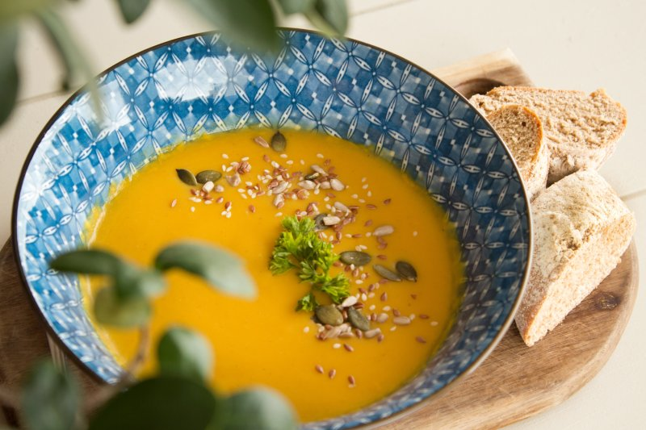

Lentil Stew

Description
This is the stew you've been waiting for. It's almost entirely made of lentils. I know. How could this be real? Why has no one thought of this before? It's going to be magnificent. All those years picking out the non-lentil parts of stew so you could get to the lentily goodness. Well NO MORE. This stew has what you want. Lentils. Almost entirely lentils.
Ingredients
- Red lentils
- Cumin
- Rice
- Onion
- Salt
- Pepper
- Water — but less than the soup...
- Olive oil
- Lemon
Steps
- Combine the lentils and rice in a large bowl and then soak in warm water while prepping the other ingredients
- Chop the onion
- Fry the onion until golden brown to dark brown
- Add water and bring to a boil...but less than the soup
- Drain the onions and rice and then add to the boiling water
- Simmer for ~30min until stew-like consistency
- Add salt, cummin, pepper
- Portion into bowls
- drizzle with olive oil and a slice of lemon